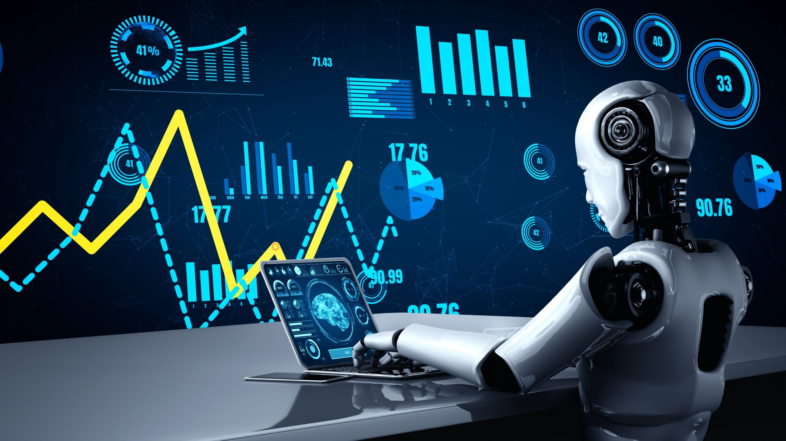

The Use of AI in Different Fields
-
In healthcare, AI is playing a crucial role in improving diagnostics, personalizing treatments, and managing health records. Machine learning algorithms analyze vast amounts of medical data to predict diseases, such as cancer or cardiovascular conditions, with unprecedented accuracy. AI-powered imaging tools assist radiologists in detecting abnormalities in scans, while robotic surgery systems offer precision and control in complex procedures.
AI-driven wearable devices monitor patients' vital signs in real time, facilitating early diagnosis and intervention. The emergence of telemedicine, enabled by AI, further revolutionizes healthcare by providing remote consultations and personalized treatment plans, thereby reducing costs and improving access to care, especially in underserved areas.

-
The educational sector is being transformed by AI-powered tools that offer personalized learning experiences. AI analyzes students' learning patterns and adapts teaching methods to suit individual needs, fostering a more tailored and efficient educational experience. Intelligent tutoring systems provide real-time feedback, helping students overcome their challenges at their own pace.
AI also assists in administrative tasks, automating routine activities like grading, scheduling, and even responding to queries. This allows educators to focus more on personalized teaching and mentoring. With AI, education is becoming more accessible, efficient, and customized to the evolving needs of students worldwide.
-
The finance industry is another area where AI is making significant strides. AI algorithms are employed to detect fraud, assess creditworthiness, and automate trading decisions. Machine learning models analyze vast amounts of financial data to predict market trends and optimize investment strategies. Robo-advisors are providing users with personalized financial advice, making wealth management more accessible to a broader audience.
AI also enhances customer service in finance through chatbots and virtual assistants, which help clients manage their accounts, answer queries, and execute transactions. By streamlining processes and improving security, AI is helping financial institutions offer more efficient and reliable services.
 -
Perhaps one of the most controversial and rapidly evolving applications of AI is in military and defense operations. AI's potential to enhance warfare has sparked significant interest among nations, leading to the development of autonomous weapons, surveillance systems, and advanced cyber defenses.
Autonomous Weapons Systems
One of the most significant areas where AI is impacting the military is through autonomous weapons systems, sometimes referred to as "killer robots." These systems, driven by AI, can independently identify and engage targets with minimal human intervention. While they offer strategic advantages in reducing human risk on the battlefield, the ethical concerns surrounding their use are immense. Autonomous drones and robots have been developed to conduct surveillance, gather intelligence, and even carry out offensive operations without direct human control.